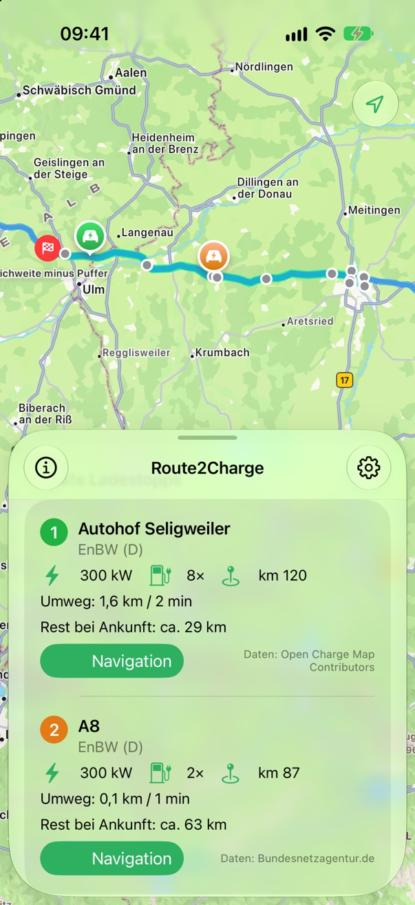
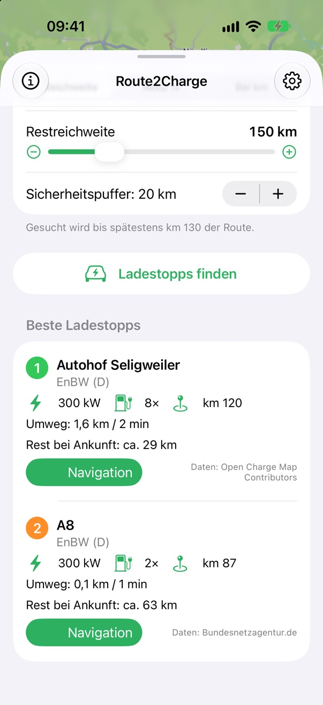

1
Ziel eingeben
Start am aktuellen Standort oder an einem beliebigen Ort. Die Route berechnet Apple Karten.
Sag Route2Charge, wohin du fährst und wie weit du noch kommst. Die App zeigt dir die zwei besten Schnelllader auf deiner Route – kurz bevor es knapp wird.

Kein Planungsmarathon – nur die Antwort, die du brauchst, wenn die Reichweite knapp wird.
Route2Charge sucht im Abschnitt kurz vor deiner Reichweitengrenze – und wählt zwei echte Alternativen, ein paar Kilometer auseinander.
Start am aktuellen Standort oder an einem beliebigen Ort. Die Route berechnet Apple Karten.
Restreichweite in km, Akkustand in % – oder einfach: Ich will bei ca. km 150 laden.
Route2Charge prüft alle Schnelllader im Ladefenster und wählt die zwei besten aus – mit echtem Umweg statt Schätzung.
Schnelllader zuerst. Weniger warten, mehr fahren.
Jeder Kandidat wird echt nachgerechnet – Säulen auf der falschen Autobahnseite fliegen raus.
Spät genug laden, um voranzukommen, früh genug, um entspannt zu bleiben. Dein Sicherheitspuffer gilt immer.
Alles auf einem Bildschirm: deine Route, das Ladefenster und deine zwei besten Optionen – mit Leistung, Umweg und der Reichweite, die bei Ankunft noch übrig ist.

Kein Account.Kein Tracking.Kein Server.
Route2Charge ist so gebaut, dass es so wenig wie möglich über dich weiß. Das ist kein Zusatz-Feature – so funktioniert die App.
Zur Datenschutzerklärung →